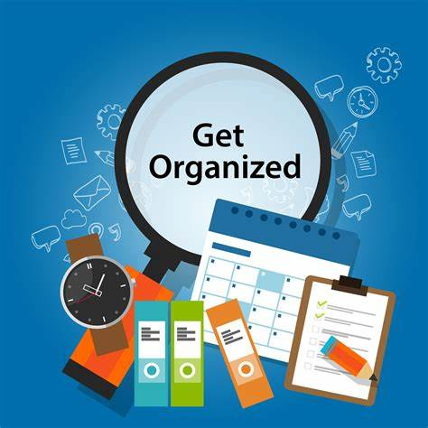
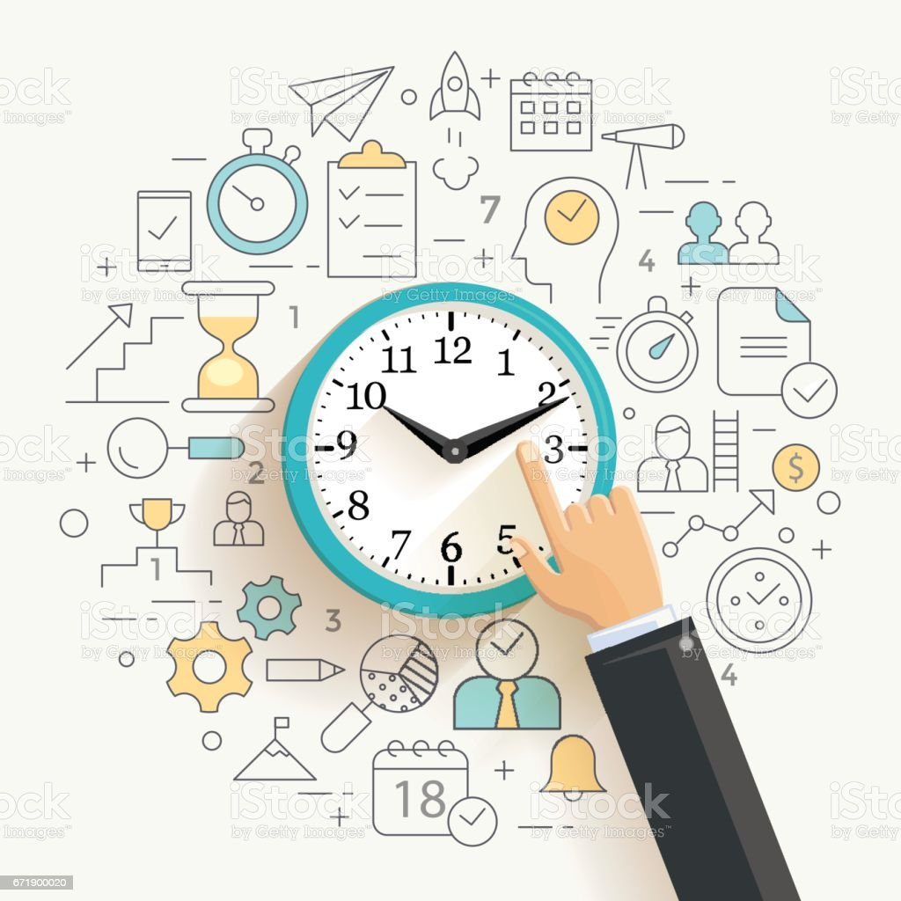

ORGANIZED LIVING
ORGANIZED LIVING
The more you try to mentally track things in your brain, the less productive you’ll be.
The first step to making a better to-do list is to get it out of your head.
This is a key tenet of the getting things done (GTD) method, which encourages you to free up brain
power by tracking your to-dos in a tool instead of in your head.
Once you have all of your to-dos written down, use a to-do list tool to turn those tasks into organized,
actionable steps. With a digital to-do list manager, you can see all of your tasks,
deadlines, and due dates in one place, so you can take action faster and more effectively.

TIME MANAGEMENT
When you know how to manage your time effectively, you can unlock many benefits.
These include:
Greater productivity and efficiency.
Less stress.
A better professional reputation.
Increased chances of advancement.
More opportunities to achieve your life and career goals.
Overall, you start feeling more in control, with the confidence to choose how best to use your time.
And by feeling happier, more relaxd, and better able to think,
you're in a great place to help others reach their targets, too.
